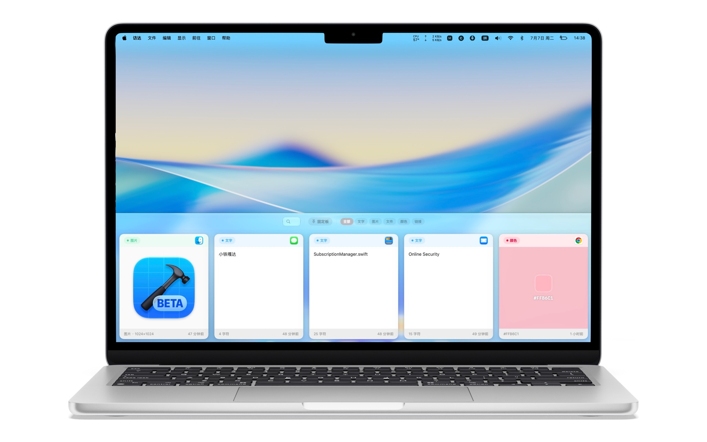
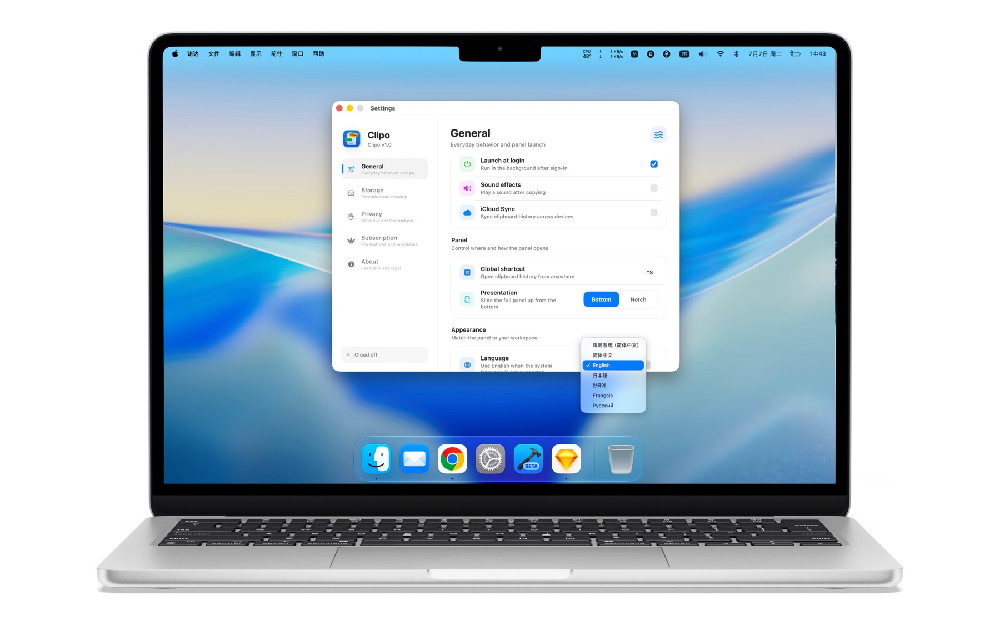

01
随手保存Save anywhere
复制内容，或从系统分享菜单发送到轻贴。文字、链接、图片与颜色会安静地进入历史。Copy content or send it from the system share sheet. Text, links, images, and colors settle into your history.
轻贴把文字、链接、颜色与图片整理成清晰的历史记录，通过键盘和分享扩展，在需要的时候快速找回。 Klipo keeps text, links, colors, and images in a clear history, then brings them back through its keyboard and share extensions.

Klipo for Mac
从底部面板到刘海模式，真实展示轻贴在 Mac 上的主要使用方式。A real look at Klipo's bottom panel, notch mode, filters, settings, and pinboards on Mac.
全局快捷键唤出浮层，用完即收。A global shortcut brings it down; it tucks away the moment you're done.

喜欢传统交互就切到这个模式。Prefer a familiar layout? Switch here anytime.

轻贴跟着你的工作习惯走。Klipo adapts to how you already work.
交互细节Interaction details
七段真实录屏，直接展示轻贴在 iPhone 上的固定、搜索、主题与内容交互。Seven real screen recordings show Klipo's pinning, search, theme, and content interactions on iPhone.
一个连续的工作流One continuous workflow
轻贴把剪贴板从临时中转站，变成随时可以回到的内容空间。Klipo turns the clipboard from a temporary stop into a place you can return to.
01
复制内容，或从系统分享菜单发送到轻贴。文字、链接、图片与颜色会安静地进入历史。Copy content or send it from the system share sheet. Text, links, images, and colors settle into your history.
02
按文字和内容类型搜索，用固定板收好重要片段；中文分词让长文本也能直接复用。Search by text and type, keep important snippets in pinboards, and reuse precise parts of longer content.
03
通过 Apple CloudKit，在 iPhone、iPad 与 Mac 之间同步支持的历史、固定状态和固定板。Use Apple CloudKit to sync supported history, pinned states, and pinboards across iPhone, iPad, and Mac.
隐私优先Privacy first
没有广告 SDK，也不出售剪贴内容。是否启用 iCloud 同步由你决定。No ad SDKs and no sale of clipboard content. You decide whether iCloud sync is enabled.